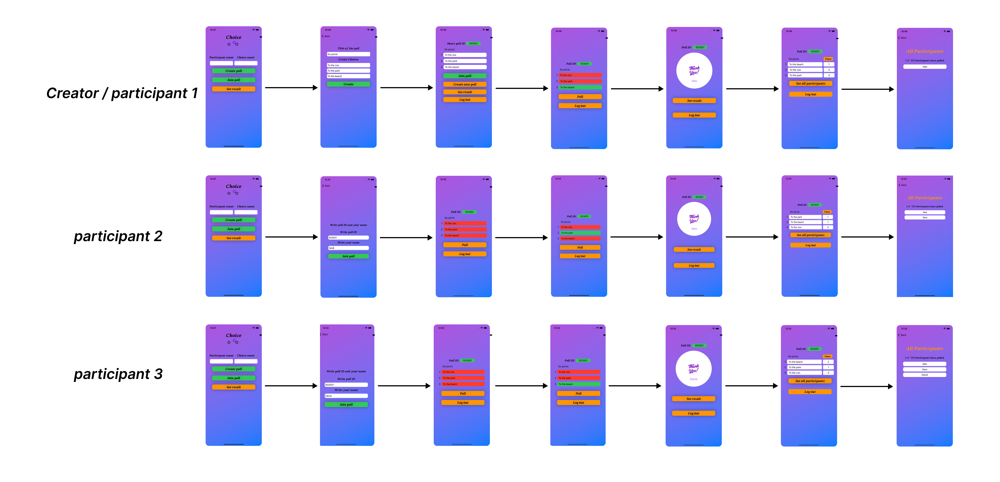

𝑪𝒉𝒐𝒊𝒄𝒆 𝒊𝒐𝒔 𝑨𝒑𝒑

Choice is an ios app which is built by Swiftui. How appen works? As Poll Creator. 1. Create poll by choosing count of participant (Minimum 2 participants) and count of choices (Between 2 and 5 choices). 2. Choose title of your poll, For example (Choose picnic). 3. Fill in all Choices, for example: Choice1 picnic to the beach, choice 2 picnic to the zoo, and choice 3 Picnic to the park. 4. Share poll ID with all participants to allow them join the poll. 5. If you (as poll creator ) will join poll too, then you should press join poll after you have created the poll. 6. If you as poll creator want to see the result after you have created the poll , the program will ask you if you want to join poll or not, because you cant see the result before you have polled. If you choose will not join the poll in order to see the result, then you can see the result, but after you have seen the result you can not join the poll at all, otherwise poll first then you can see the result. That to avoid effect on the result. If you choose join poll, then the program going to ask you to write your name. Write your name then press join poll, after that the program will take you to that page where you will choose on of choices. 7. Choose one of choices then press poll. After you have polled you can see the result and the list of all participants. 8. Result and the list of all participant update automatically as soon as changes happen. As participant: 1.Get Poll ID from the creator.. 1. Choose join poll (You cant see the result before you have polled) 2. Write your name and Poll ID. 3. Choose one choice of all choices then press poll ,after that you can see the result and who have polled. .